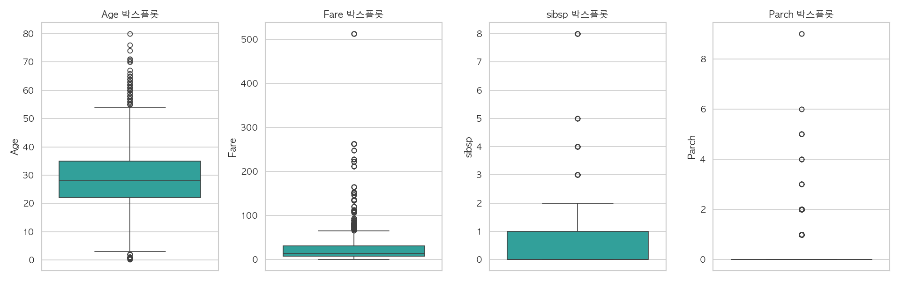
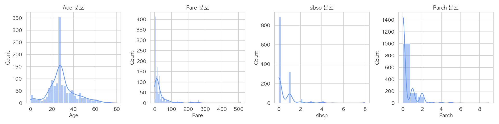

타이타닉 데이터. 품질 점검, 상관관계, 그리고 재현율을 지키는 예측 모델까지.
1,309행 = 공개 train 891 + test 418의 병합. 값이 전부 0인 컬럼 19개. Age 결측은 0인데 소수점 나이 45개, Age==28 295명. Fare==0 17명. 전부 인위적 대체의 흔적.


부트스트랩 95% 신뢰구간 포함. 회색 띠 = 불확실성 범위.
성별 단독 상관 +0.40. 그러나 등급과 곱하면 이야기가 달라짐.
1·2등급 여성 생존율 0.63~0.66. 3등급 여성 0.33. 상호작용을 무시하면 놓치는 구조.
| 모델 · 5겹 CV | ROC-AUC | 재현율 | F1 |
|---|---|---|---|
| LogisticRegression | 0.789 | 0.713 | 0.582 |
| RandomForest · 채택 | 0.805 | 0.725 | 0.605 |
| HistGradientBoosting | 0.802 | 0.453 | 0.526 |
핵심 — 데이터를 의심하고, 지표를 나눠 보고, 불확실성을 숨기지 않기.
근거 — quality check · correlation viz · validation · final model.